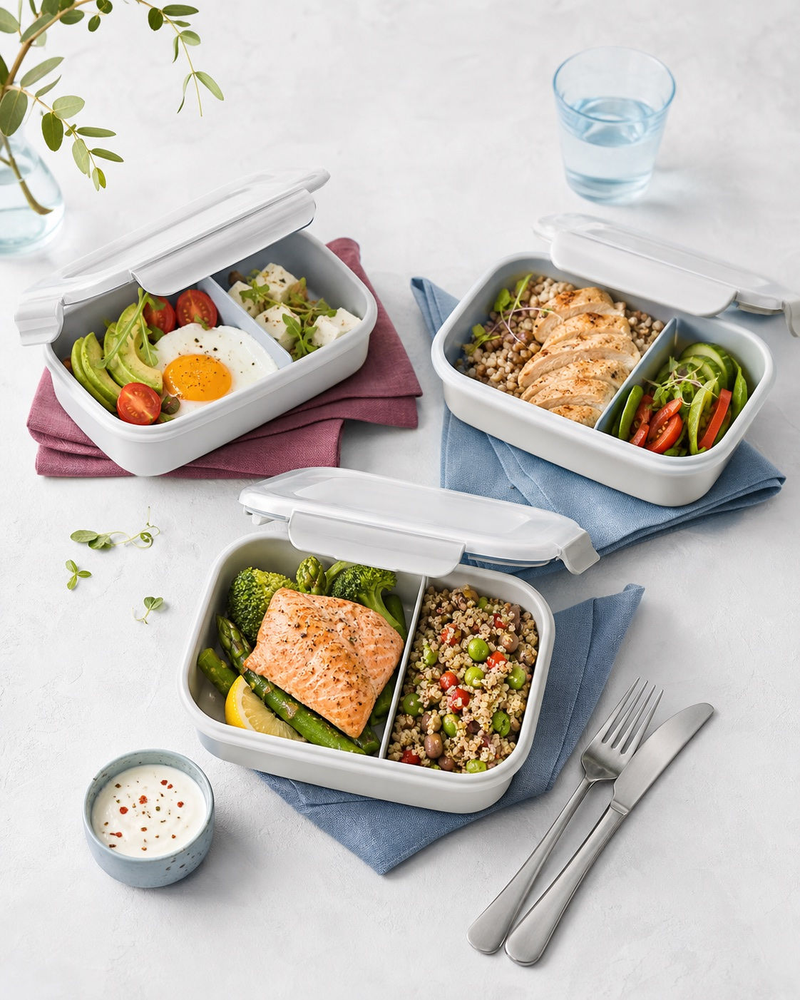
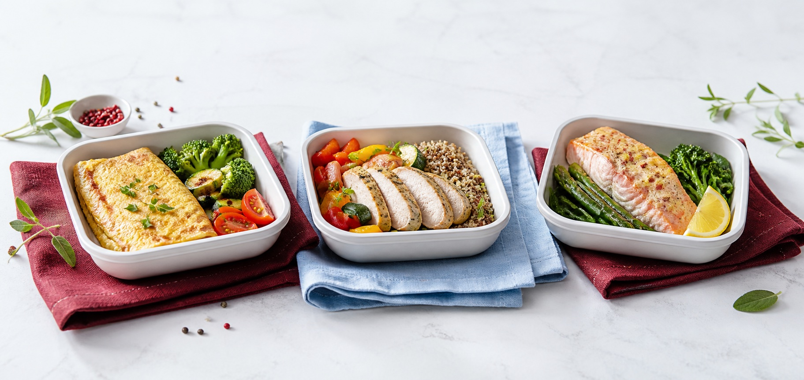
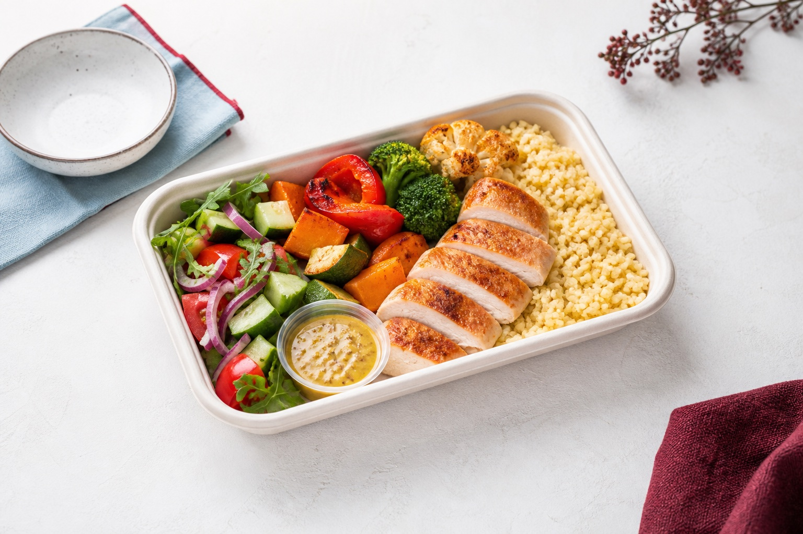
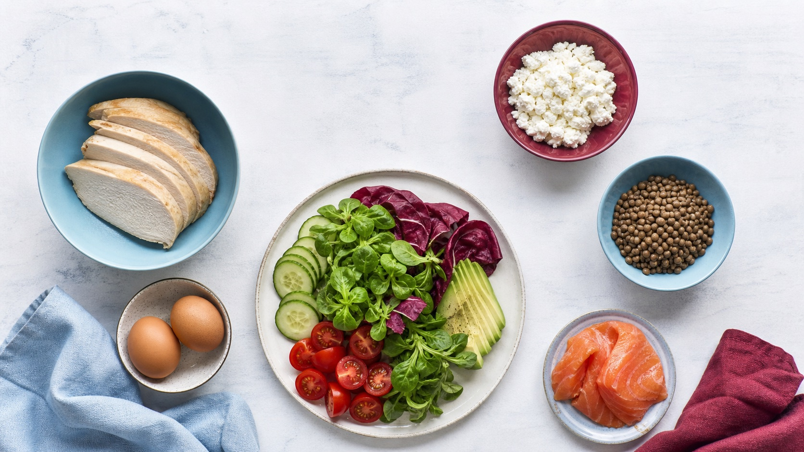

Primary
#8E242EКаталог фиксирует активные цвета, типографику, размеры, состояния и повторяемые компоненты прямо из финальной публикации. Это не редизайн: визуальный характер сайта сохранён.

Активный слой публикации сочетает бордовый акцент, холодные голубые поверхности, Bebas Neue в заголовках и Nunito во всём интерфейсном и основном тексте.
Семантические имена повторяют назначение цветов, а не привязаны к конкретному экрану.
#8E242E#74202A#0F4D7A#23333D#536F8A#BDDCED#E4F0F7#F8E083Bebas Neue строит иерархию, Nunito обеспечивает читабельность русского текста и символа ₽.
Протокол вместо диеты
Как это работает
Протокол 28 дней
Три приёма пищи, рассчитанный КБЖУ и готовый план на каждый день — без ежедневных таблиц и подсчётов.
Базовая шкала кратна 4 px; в опубликованной системе чаще всего повторяются 8, 10, 12 и 16 px.
Компоненты собраны из повторяемых паттернов главной, каталога протоколов, боксов, витрины, акций и FAQ — с теми же ассетами, контентной плотностью и состояниями.

28Три приёма пищи без перекусов, полный КБЖУ и разгрузочные дни каждую неделю.

Готовый сбалансированный приём пищи без обязательства заказывать цикл.
Скидка действует на любой протокол от 7 дней.
Экономите 20% и знакомитесь с протоколом с меньшими затратами.

Простая формула, которая работает и для похудения, и для набора массы.
Протокол — это цикл с заранее просчитанным меню: три приёма пищи, фиксированные интервалы и полный КБЖУ.
Базовый подходит для повседневного ритма, спортивный — для тренировок и восстановления.
Утренний интервал доставки в публикации указан с 6:00 до 9:00.
Система работает не только на уровне цвета и кнопки. Повторяемый порядок помогает быстро читать экран и принимать решение.
Сначала показываем, что входит в продукт, затем чем это лучше и что получает человек.
В продуктовых карточках изображение занимает отдельную устойчивую зону и не конкурирует с ценой или КБЖУ.
У секции есть одна доминирующая CTA; вторичная ссылка не получает равный визуальный вес.
Контент ограничен общей шириной, а поля страницы растут от 16 до 40 px без скачков.
Карточки и поля используют 2 px. Скругление — функциональная деталь, а не отдельный визуальный стиль.
Основной текст не уменьшается ниже 17 px, контролы держат минимум 44–48 px по высоте.
Финальная публикация использует отдельный focus-токен, светлую цветовую схему, крупные touch targets и отключает декоративное движение при системной настройке reduced motion.
Трёхпиксельный контур с белым разделителем остаётся видимым на бордовом, голубом и белом фоне.
Навигация, меню, иконка аккаунта и мобильные поля сохраняют комфортную сенсорную область.
Плавное появление, параллакс и ambient-эффекты не должны быть обязательными для понимания интерфейса.